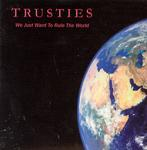

| Artist: | Trusties |
| Title: | We Just Want To Rule The World |
| Label: | Independent |
| Length(s): | 59 minutes |
| Year(s) of release: | 2003 |
| Month of review: | [04/2004] |
| 1) | Overture | 2.59 |
| 2) | Universe's End | 6.14 |
| 3) | Back To The Womb | 6.13 |
| 4) | Your God | 6.13 |
| 5) | Messages | 3.44 |
| 6) | Looking For Keith | 1.37 |
| 7) | The Ultimate Decision | 4.02 |
| 8) | A Different White | 5.43 |
| 9) | The Usual Black | 1.59 |
| 10) | In The Forest | 3.05 |
| 11) | In The Valley | 5.00 |
| 12) | Nothing | 5.01 |
| 13) | Everything | 10.42 |
Universe's End starts out progressively sounding, but after a break leads into a more rocky track. This rocky style continues into The Womb, although that picks up momentum along the way. Your God has more of a progressive feel, and with its double vocals at times hints at Echolyn. Messages is almost singer songwriter, although the clear bass suggests differently.
Looking for Keith is an acoustic guitar track, short enough to remain interesting. The same goes for The Usual Black. The Ultimate Decision has a bit of an alt feel, with its strong guitar, freaky bass and rocky vocals. A Different White once again has double vocals, but the djembe like percussion and rhythmic guitars make a different impression. Nice one.
In The Forest is a sort of fireside song. Although In The Valley is less fireside, the acousticity remains, making it sound a little sparse, almost to the point of Nothing. Everything, despite its title, cannot compensate for this. Granted, after the first third being another acoustic bit it does switch the electricity back on, but it remains a mainly acoustic bit.
The guitar regularly moves to the fore, displaying some guitar meistering, especially on the first couple of tracks. Beside that the instruments fit together quite well in general, never irritating or falling out of order, yet never enticing either.